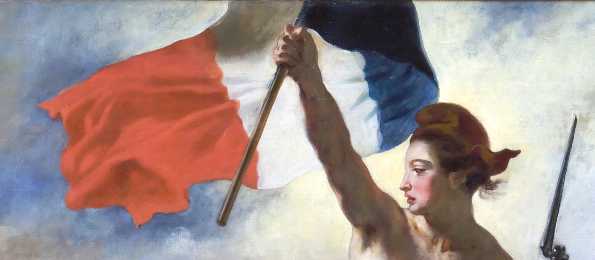

Optima Academy OnlineAn Education Experience Company
Optima Academy OnlineAn Education Experience CompanyÊtre français
Read each paragraph, then press ▶ Écouter and follow along with your eyes. Read it a second time with the audio playing — eye and ear together is where fluency lives.
- j'ai appris — I learned
- au début — at the start
- très peu — very little
- mieux — better
- un jour — one day / someday
- retourner — to return / go back
- les endroits — the places
- Vive la France ! — Long live France!
Qu'est-ce que c'est, être français ? Pour moi, c'est la langue, la culture et les traditions. La devise de la France est « Liberté, Égalité, Fraternité ».
Cette année, j'ai beaucoup appris. Au début, je parlais très peu, mais maintenant je comprends mieux la culture française. J'ai visité Paris, les régions, et j'ai découvert la cuisine.
Je suis fière de parler français. Un jour, je voudrais retourner en France et voir les plus beaux endroits du pays. Vive la France !
The passage is below. In three steps, underline every passé composé, circle the one imparfait, then find the superlative and the voudrais wish — both of this module's new grammar points are in here. Tap the words: the page marks them for you.
France's motto is three words: Liberté, Égalité, Fraternité — liberty, equality, brotherhood. Its roots go back to the Revolution of 1789; it became the Republic’s official motto in 1848, and since 14 July 1880 it has been carved on the front of public buildings, such as the mairie (town hall). It is the shortest summary of what the Republic promises its citizens.
The Republic has faces too. Marianne — a woman in a Phrygian cap — personifies the Republic; she has a place of honour in town halls, and her profile is on French euro coins and stamps. The drapeau tricolore (bleu-blanc-rouge) dates from the Revolution, and each 14th of July, le 14 juillet (Bastille Day), France remembers the storming of the Bastille in 1789 with a parade down the Champs-Élysées and celebrations all over the country.
Identity, for the passage's author, isn't only monuments — it's the langue, the culture, and the traditions she has spent a year learning. That is exactly what you have been doing.
Le tableau · La Liberté guidant le peuple (Liberty Leading the People). Eugène Delacroix painted it in 1830, for the July Revolution of that year (people often think it shows 1789: it does not). Liberty, a woman of the people in a red Phrygian cap, leads Parisians forward and holds the tricolore high. Over time she became one of the best-known images of Marianne and of the Republic. The painting hangs in the Louvre. Use the close-up and the paragraph to answer. Instant feedback — practice, not a grade.

Ma valeur (my value). Which of the three ideals matters most to you? Write three sentences, one in each box: the ideal, with a superlative; what you do for it; and who or what représente it (a person, a symbol or a tradition from the year). Click a word in the word bank to add it.
All year, the course tied French life to Optima's seven virtues. In Semester 1, each module introduced a French figure who embodied one of them; in Semester 2, you met the virtues again in French people and customs. Being French, in the fullest sense, means carrying these virtues forward. Here is your year, gathered:
| Virtue | Semestre 1 · a French figure |
|---|---|
| Courage · le courage | Jeanne d'Arc |
| Courtesy · la courtoisie | Roland |
| Honesty · l'honnêteté | Émile Zola |
| Perseverance · la persévérance | Marie Curie |
| Self-government · la maîtrise de soi | Montaigne |
| Service · le service | Louis Braille |
| Responsibility · la responsabilité | Charles de Gaulle |
| Module | Semestre 2 · virtue | Where you met it |
|---|---|---|
| 1 | Courtesy · la courtoisie | la bise: greeting each person, one by one |
| 2 | Responsibility · la responsabilité | the teachers, families and musicians who kept le breton alive |
| 3 | Courtesy · la courtoisie | je voudrais, s’il vous plaît: courtesy at the table |
| 4 | Perseverance · la persévérance | the Tour de France riders, stage after stage |
| 5 | Responsibility · la responsabilité | a great city that belongs to everyone: each rider does their small part |
| 6 | Courage · le courage | Monet and his friends, who kept painting their way when people laughed |
| 7 | Courage · le courage | Catherine Dior, who joined the French Resistance in 1941 |
| 8 | Service · le service | Édith Piaf, who helped young singers become stars |
Seven virtues, two semesters, one year. You didn't just learn a language — you met a people through the good they did. « Liberté, Égalité, Fraternité » is a motto; these lives and customs are what it looks like.
⭐ Extra practice for this part is in Pour aller plus loin, at the end of the lesson.
Write five sentences on what French has meant to you
Reflect on the year. Use at least one superlative (le plus, le meilleur), one voudrais wish, one passé composé, and one imparfait. This is your rehearsal for both the Speaking Task and the Semester 2 Final — write it well and reuse it. Write one sentence in each box; the coach ticks each element as you write.
That is the end of today’s lesson. If you have time, these extras give you more practice. Each one goes with a part of the lesson above.
You read a whole reflection on French identity and understood it — grammar, culture, and virtue in one page. That's reading at the top of French 1. Tomorrow is an assessment day — à demain ! (See you tomorrow!)